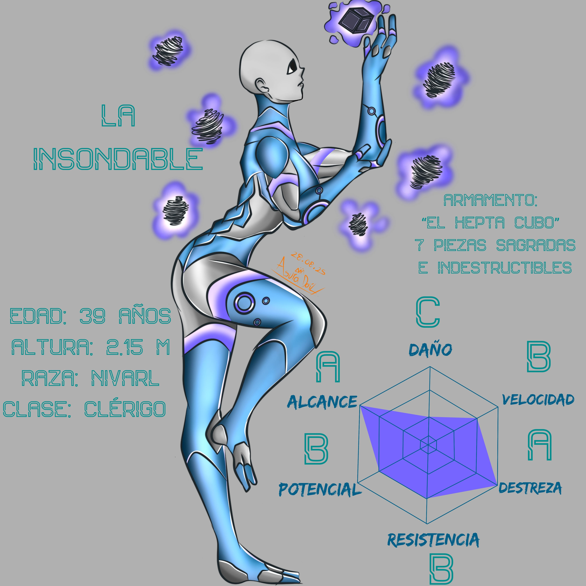
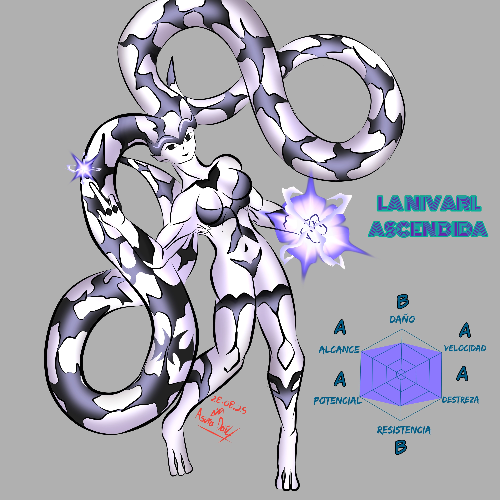

TRAS EVOLUCIONARSE A SÍ MISMA TRASCENDIÓ EL PODER DE SU ESPECIE
ALCANZANDO NUEVOS LÍMITES.
Portadora del poder mágico “Ascensión Estelar”,
“La insondable” posee la capacidad única de desbloquear el
potencial latente en los seres que la rodean. Gracias a su
energía natural, puede hacer florecer habilidades ocultas
dentro de los individuos, guiándolos hacia su máxima expresión.
Sin embargo, su don más extraordinario consiste en la habilidad de
evolucionar a un objetivo de su elección, aunque solo una vez en
toda su existencia, lo que convierte esa decisión en un acto sagrado
e irreversible.
Como armamento, porta el legendario “Hepta Cubo”, un
conjunto de 7 piezas indestructibles y de origen desconocido,
cuyo verdadero poder sólo puede ser manejado por los miembros más
sobresalientes de su especie.
En un momento crucial de su historia, eligió evolucionarse a sí misma,
liberando su esencia más pura. Gracias a ello, superó el poder natural
de su especie y alcanzó un nuevo plano de existencia, donde sus
capacidades ya no se rigen por las leyes conocidas. Es un ser que
encarna a la transformación absoluta.